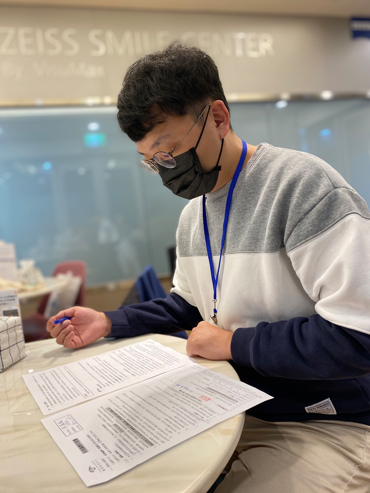
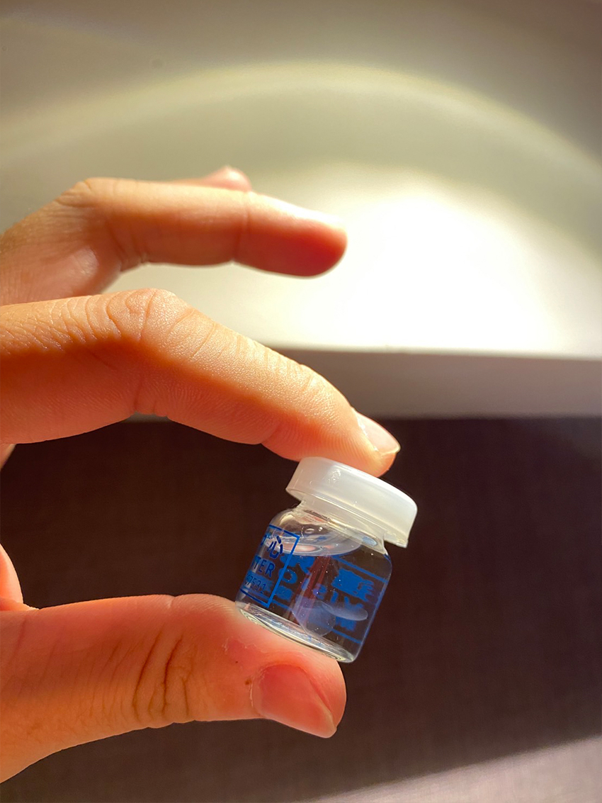
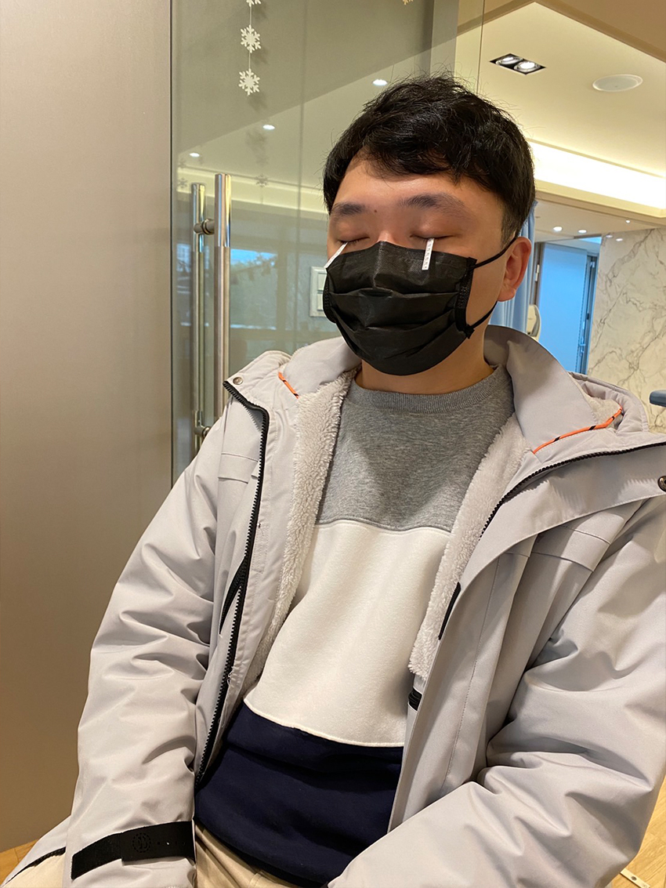
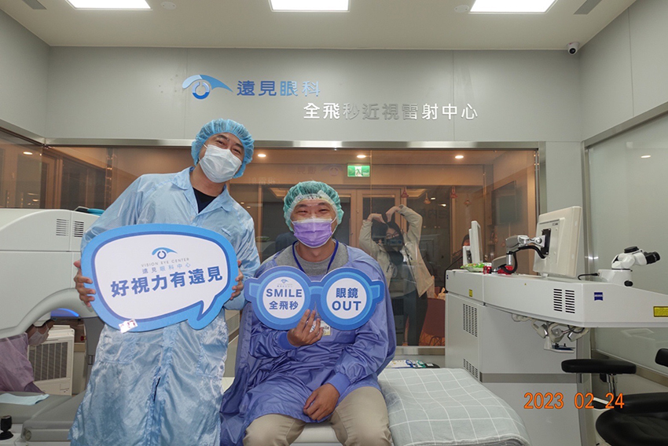
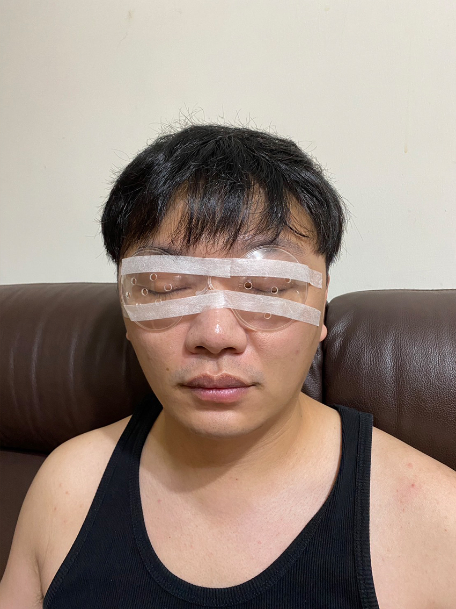

你厭倦戴一整天隱形眼鏡的乾澀感嗎？你受夠了戴著眼鏡從事運動活動，還要擔心眼鏡隨時會掙脫你的臉嗎？你是否渴望吃熱食可直接清楚欣賞美食，而不被霧氣覆蓋整個鏡片嗎？上述願望現今皆可仰賴科技技術進步所賜，跟朦朧美的視界說掰掰已不再是不可能的任務。
由於室友（註：我先生）的頭顱跟一般人相比略微寬大一點，在眼鏡的選擇上一直找不到合適的樣式，經常被鏡腳壓到太陽穴疼痛不已，對於近視雷射手術一事一直放在心上，但對於初期的手術品質穩定性存有疑慮，直到近期看到位於新竹遠見眼科診所Smile全飛秒近視雷射的介紹，才鼓起勇氣與掏空荷包去做手術。
|  |
| （圖為閱讀手術同意書中） |
Smile全飛秒近視雷射全名為 SMall Incision Lenticule Extraction「微創角膜透鏡萃取」，與初期近視雷射技術的差異優勢如下四大項：
- 極小傷口約2~4mm（不須大面積掀開角膜，傷口恢復期短）
- 手術療程時間短，約23秒~35秒（我真的拿碼表在手術室外計時，哈哈）
- 術後產生乾眼症的機率低（因為沒有大面積掀開角膜破壞表層結構）
- 視力恢復快（手術在晚上進行，隔天早上起床就看得很清楚沒有水霧感了）
爬文研究一番後，趁著228連假期間趕緊預約手術評估諮詢，診所的諮詢師會針對眼睛做一系列的健檢（整個過程約1.5到2小時左右），我們普通人可能會覺得都是重複在做一樣的檢查，只是一直換儀器讓我們盯著畫面的小房子，或者熱氣球等小圖案，諮詢師解釋說，盯著圖案是為了讓眼球固定不要飄移，其實儀器所判讀的數據都是不相同的，其中角膜厚度是攸關能不能接受手術的最主要關鍵，因為角膜的結構有五層，在角膜表面-上皮層開孔約2~4mm後進入到第三層-角膜基質層切割下角膜透鏡（形狀超像隱形眼鏡的），藉此矯正近視，所以角膜不夠厚的人，是無法做近視雷射手術的！
|  |
| （圖為雷射切割下的角膜透鏡） |
另外，諮詢師在諮詢講解過程中會點麻醉藥水到眼睛，約5分鐘後放試紙在眼皮下觀察濕潤度，用來測試淚水分泌程度判斷諮詢者本身的乾眼程度（感覺是要先澄清，若術後有乾眼症狀跟手術無關…）
|  |
| （圖為淚水分泌程度測試中） |
由於這次的手術安排在晚上（當天早上諮詢，晚上就進行手術），診所安排我們到附近配合的老爺酒店休息，隔天早上回診查看傷口狀況（回診結束後，室友就直接自行開車回台北了！）。術後一共需回診三次，剩餘兩次可在配合的台北診所就診，省去長途跋涉的時間。
|  |
醫生在看診時，會特別叮嚀以下幾項手術後的注意事項，畢竟眼睛是靈魂之窗要好好保養它。
- 術後 1 週內應注意眼睛保養（雖然開口只有2~4mm，但畢竟還是傷口）
- 配戴防壓眼罩睡覺
- 外出時配戴墨鏡預防紫外線與空汙
- 室內配戴護目鏡避免反射性/無意識的揉眼
- 避免眼睛碰水、游泳、泡溫泉、眼妝
- 遵循醫師開立的內服藥和眼藥水
- 術後需配合醫師指示回診檢查
|  |
| （圖為配戴防壓眼罩準備去睡覺） |
上述所提的藥品與配戴物品，診所都會提供不需另行購買，清單如下：
- 抗生素眼藥水：預防傷口發炎及感染
- 類固醇眼藥水：幫助傷口癒合
- 人工淚液：改善眼睛乾澀狀況
- 太陽眼鏡、防風護目鏡
- 睡覺用的防壓眼罩與透氣膠帶
- 裝藥水的小包包
依據室友的術後感想表示，只有手術完的那段時間，視線看到的畫面都是模糊水霧的，隔天一覺醒來的視線畫面非常清晰，也沒有疼痛、眼睛有異物的感覺，目前只有在黑暗中看燈光會覺得像蒲公英有光線暈開的狀況，讓我們持續追蹤觀察這狀況吧。